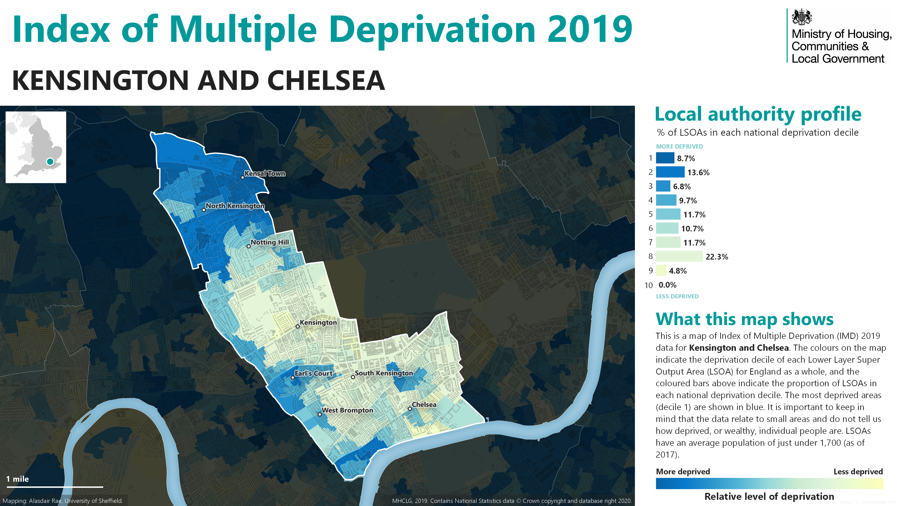

A Borough Divided
North Kensington houses significant Afro-Caribbean and Moroccan communities, refugees, and young professionals priced out of central London. At the 2011 Census, 34% of North Kensington households were deprived on two or more measures, compared with 22% across the borough.
Source: A Journey of Recovery: Needs Assessment (2018), Table 1 [R006].
Despite these divisions, connecting threads exist. Victorian architecture spans both areas, though in varying conditions. Portobello Road Market[R008] serves both communities, selling antiques to tourists while providing affordable goods for locals. Excellent transport links benefit everyone, though travel costs impact residents differently.
These contrasts reflect decades of housing policy and urban planning that created distinct economic zones. Today, this small borough serves as a microcosm of London’s broader inequalities, where historic neighbourhoods and market forces have created an area of marked economic inequality within a remarkably compact space.


The image links to the full-size original.
Reflect
To what extent does the Index of Multiple Deprivation (IMD) map for Kensington and Chelsea reveal a ‘polarised’ urban society?
Reading the map
The map shows a striking north-south divide: deprivation is concentrated in North Kensington (Kensal Town, Golborne, Notting Dale) while many areas further south show lower levels of deprivation. Borough-wide averages mask this internal inequality. Small pockets of deprivation also appear in the south near World’s End and Earl’s Court, social housing estates surrounded by immense private wealth, illustrating how inequality can exist at the scale of a single street.
Reflect
Why might borough-level statistics be misleading when assessing quality of life in a place like Kensington and Chelsea?
What borough averages conceal
Borough-level summaries can conceal substantial differences between neighbourhoods. The IMD measures relative deprivation rather than average income or wealth; some areas of North Kensington rank among the most deprived in England. This matters because policy decisions based on borough-level data may fail to direct resources where they are most needed. The Grenfell Tower fire exposed this gap: a community experiencing significant deprivation existed within a borough widely perceived as affluent, and their concerns about building safety were repeatedly dismissed.